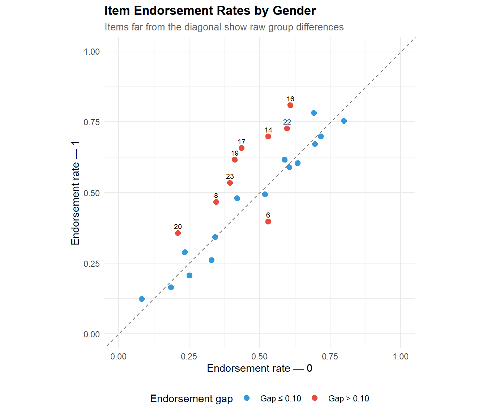
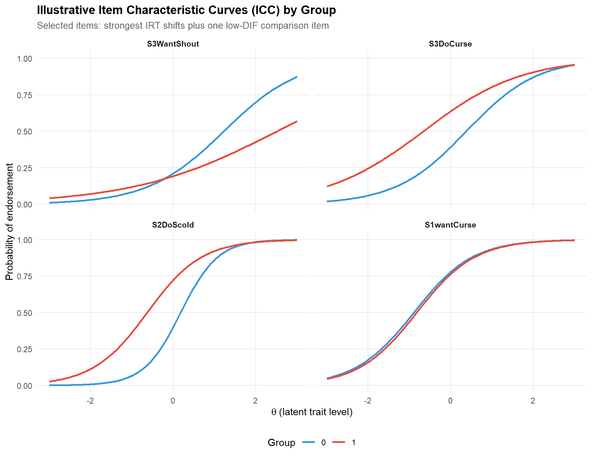
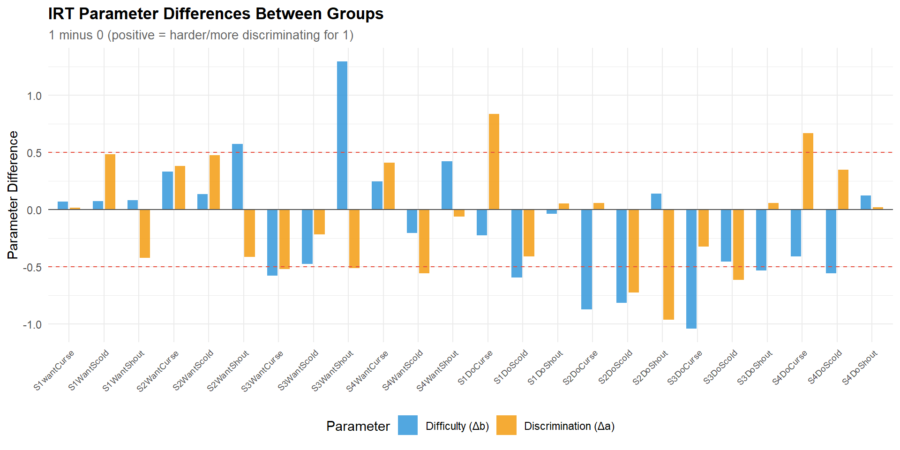
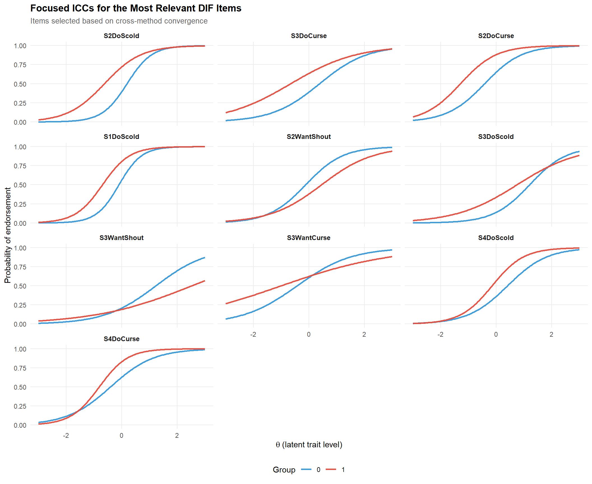
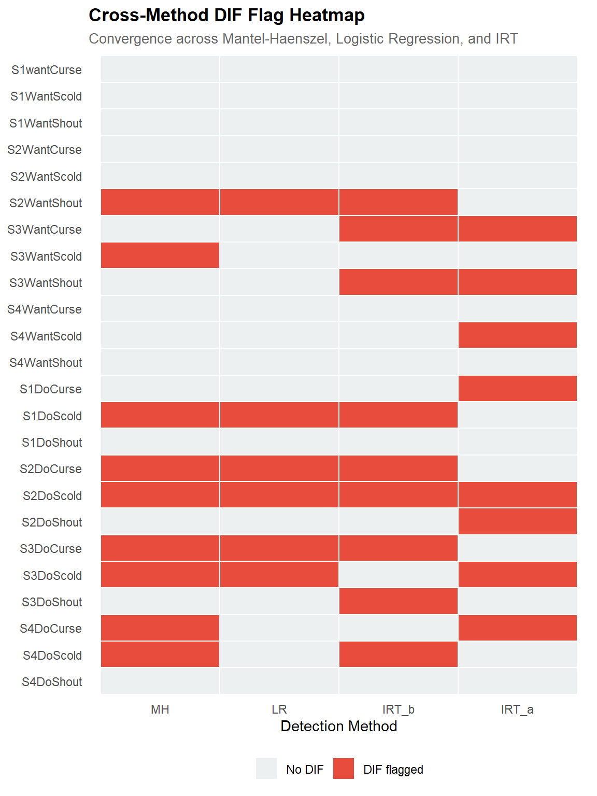
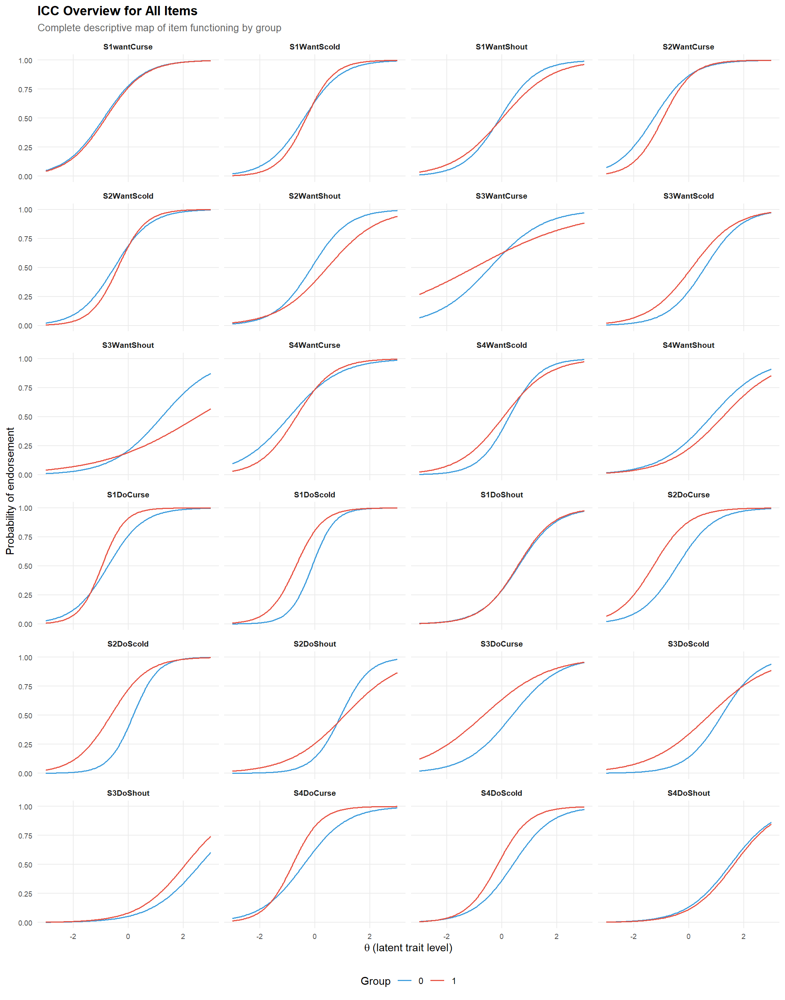
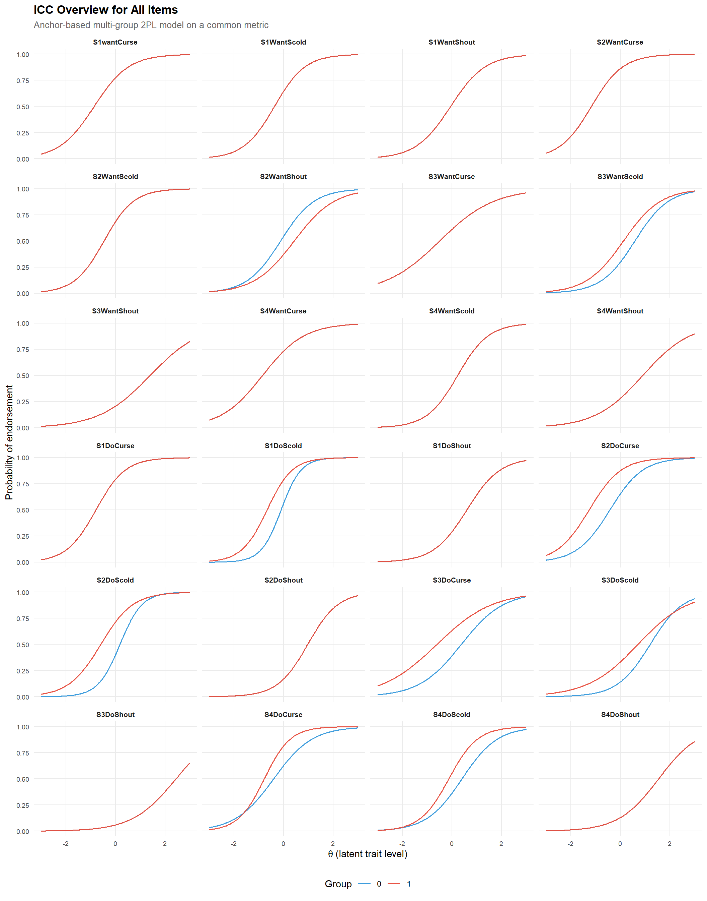
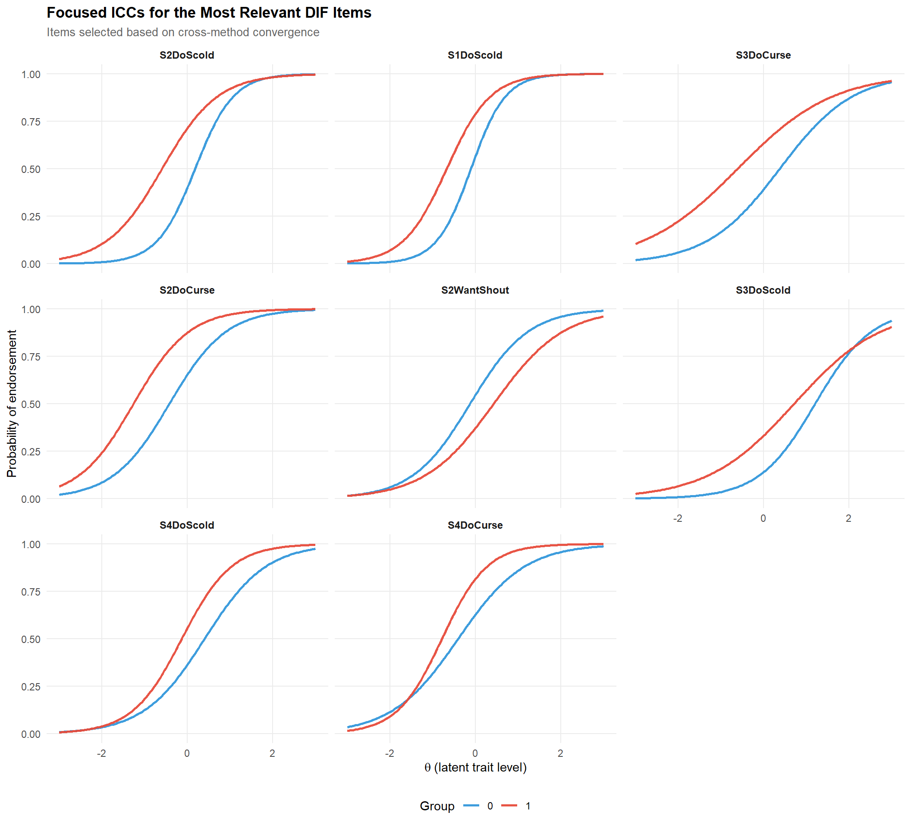

# ── Core packages ──────────────────────────────────────────────────────────────
library(difR) # DIF detection methods
library(mirt) # IRT-based DIF
library(ggplot2) # Graphics
library(dplyr) # Data manipulation
library(tidyr) # Data reshaping
library(tibble) # Modern data frames
library(knitr) # Table rendering
# ── Global plot theme ──────────────────────────────────────────────────────────
theme_set(
theme_minimal(base_size = 11) +
theme(
plot.title = element_text(face = "bold", size = 13),
plot.subtitle = element_text(colour = "grey40", size = 10),
legend.position = "bottom"
)
)
palette_dif <- c("#2C3E50", "#E74C3C", "#3498DB", "#2ECC71", "#F39C12")
set.seed(2026)Differential Item Functioning & Fairness Analysis
R
Psychometrics
DIF
Fairness
IRT
Measurement Bias
Detection and interpretation of Differential Item Functioning (DIF) using IRT-based approaches. Applied to the verbal aggression dataset with gender as the grouping variable. Includes effect size classification, DIF visualisation, and practical recommendations for fair assessment. three complementary methods: Mantel-Haenszel, logistic regression, and
0.1 Context
Differential Item Functioning (DIF) occurs when respondents from different groups (e.g., gender, ethnicity, school) who have the same level of the latent trait have different probabilities of endorsing an item. DIF is a measurement bias signal: it means the item measures something different (or something additional) across groups, threatening the fairness and validity of the assessment.
DIF analysis is essential in any assessment context where scores are compared across demographic groups — including educational testing, certification or recruitment. Without it, observed score differences may reflect measurement artefacts rather than genuine ability differences.
This project demonstrates three complementary DIF detection methods:
- Mantel-Haenszel (MH) — a contingency-table approach that detects uniform DIF (consistent advantage for one group across all ability levels). The standard in large-scale testing programmes.
- Logistic regression — extends MH by testing both uniform and non-uniform DIF (group × ability interaction). Provides a model-comparison framework with effect sizes.
- IRT-based DIF — compares item parameters (difficulty, discrimination) across groups within an IRT framework. Most informative but requires larger samples for stable estimation.
The dataset is the verbal aggression data from the difR package (Vansteelandt, 2000): 316 respondents (male/female), 24 dichotomous items measuring verbal aggression in frustrating situations. Gender serves as the grouping variable. The verbal aggression dataset provides a realistic scenario for DIF analysis:items describe frustrating situations and ask respondents about aggressive verbal responses. Gender is a natural grouping variable because self-reported verbal aggression patterns are known to differ between men and women — but the question is whether these differences reflect true trait differences or item-level measurement bias.
0.2 Key Results
Mantel-Haenszel: 9 items flagged (p < .05) after iterative purification. ETS classification: 8 Category A, 4 Category B, 12 Category C. The largest effects are S2DoCurse (Δ = 3.11), S2DoScold (Δ = 2.82), and S1DoScold (Δ = 2.25). “Do” items account for 8 of 12 C-level flags.
Logistic regression: 6 items flagged (S2WantShout, S1DoScold, S2DoCurse, S2DoScold, S3DoCurse, S3DoScold). Effect sizes are small (max R² = 0.035), illustrating the significance/effect-size distinction. The 6-item set is a strict subset of MH flags, confirming convergence.
IRT-based DIF: 9 items with |Δb| > 0.50 and 8 with |Δa| > 0.50. Largest shifts: S3WantShout (Δb = 1.30), S3DoCurse (Δb = −1.04), S2DoShout (Δa = −0.96).
Cross-method synthesis: 6 high-priority items (flagged by 3–4 methods), 4 medium, 5 low, 9 clear. S2DoScold is the only item flagged by all four criteria. The dominant pattern: “Do” items show systematically more DIF than “Want” items, suggesting construct-relevant gender differences in behavioural expression rather than pure measurement bias — a finding that warrants subscale-level modelling.
0.3 Setup
1 PART A — Data Exploration
1.1 Data overview
# ── Load data ──────────────────────────────────────────────────────────────────
data("verbal", package = "difR")
cat("Dimensions:", nrow(verbal), "respondents ×", ncol(verbal), "columns\n")Dimensions: 316 respondents × 26 columnscat("Columns:", paste(colnames(verbal), collapse = ", "), "\n")Columns: S1wantCurse, S1WantScold, S1WantShout, S2WantCurse, S2WantScold, S2WantShout, S3WantCurse, S3WantScold, S3WantShout, S4WantCurse, S4WantScold, S4WantShout, S1DoCurse, S1DoScold, S1DoShout, S2DoCurse, S2DoScold, S2DoShout, S3DoCurse, S3DoScold, S3DoShout, S4DoCurse, S4DoScold, S4DoShout, Anger, Gender # ── Identify item columns and grouping variable ───────────────────────────────
# The verbal dataset has items S1WantCurse through S4DoScold, plus Anger and Gender
item_cols <- colnames(verbal)[1:24]
n_items <- length(item_cols)
# Gender coding
group_var <- verbal$Gender
cat("\nGrouping variable (Gender):\n")
Grouping variable (Gender):print(table(group_var))group_var
0 1
243 73 # ── Item response matrix ──────────────────────────────────────────────────────
items <- verbal[, item_cols]
cat(sprintf("\nItem matrix: %d respondents × %d items\n", nrow(items), ncol(items)))
Item matrix: 316 respondents × 24 itemscat(sprintf("Response range: %d – %d\n", min(items), max(items)))Response range: 0 – 11.1.1 Interpretation
The dataset contains 316 respondents (243 in group 0, 73 in group 1) on 24 dichotomous items measuring verbal aggression across four situations (S1–S4), two response modes (Want vs. Do), and three aggression types (Curse, Scold, Shout). The unbalanced group sizes (243 vs. 73) are noteworthy: the smaller group has sufficient power for MH and logistic regression DIF detection (N > 50 per group is generally adequate; Narayanan & Swaminathan, 1996), but IRT-based DIF estimation may be less stable with n = 73.
The item naming convention encodes content: S[situation][Want/Do][Type]. This structure allows us to examine whether DIF patterns are systematic — for example, whether “Do” items (actual behaviour) show more DIF than “Want” items (behavioural intention), which would be substantively informative.
1.2 Item difficulty by group
# ── Compute endorsement rates per group ────────────────────────────────────────
p_group <- items |>
mutate(group = group_var) |>
pivot_longer(-group, names_to = "item", values_to = "response") |>
group_by(item, group) |>
summarise(endorsement = mean(response), .groups = "drop") |>
pivot_wider(names_from = group, values_from = endorsement)
# Rename columns based on actual group labels
group_labels <- names(table(group_var))
colnames(p_group)[2:3] <- group_labels
p_group <- p_group |>
mutate(
diff = .data[[group_labels[2]]] - .data[[group_labels[1]]],
item = factor(item, levels = item_cols)
)
ggplot(p_group, aes(x = .data[[group_labels[1]]],
y = .data[[group_labels[2]]])) +
geom_point(aes(colour = abs(diff) > 0.10), size = 2.5) +
geom_abline(slope = 1, intercept = 0, linetype = "dashed", colour = "grey50") +
geom_text(aes(label = ifelse(abs(diff) > 0.10, item, "")),
vjust = -0.8, size = 2.5) +
scale_colour_manual(values = c("FALSE" = palette_dif[3],
"TRUE" = palette_dif[2]),
labels = c("Gap ≤ 0.10", "Gap > 0.10"),
name = "Endorsement gap") +
labs(
title = "Item Endorsement Rates by Gender",
subtitle = "Items far from the diagonal show raw group differences",
x = paste("Endorsement rate —", group_labels[1]),
y = paste("Endorsement rate —", group_labels[2])
) +
coord_fixed(xlim = c(0, 1), ylim = c(0, 1))
1.2.1 Interpretation
The endorsement rate scatter compares the proportion of positive responses for each item between the two groups. Items near the identity line show similar endorsement rates; items far from it show raw group differences.
However, raw differences do not imply DIF. A group may legitimately have a higher trait level (e.g., men may report more verbal aggression on average), which would shift all items in the same direction. DIF occurs when specific items deviate beyond what the overall trait difference predicts — when the item behaves differently across groups even after matching on total score or latent ability. The formal DIF methods below control for this.
2 PART B — Mantel-Haenszel DIF Detection
The Mantel-Haenszel (MH) procedure is the most widely used DIF detection method in large-scale testing (Holland & Thayer, 1988). It conditions on total score (as a proxy for ability) and tests whether the odds of endorsing an item differ between groups at each score level.
2.1 MH analysis
# ── Mantel-Haenszel ────────────────────────────────────────────────────────────
mh_result <- difMH(Data = items,
group = group_var,
focal.name = levels(factor(group_var))[2],
purify = TRUE)
print(mh_result)
Detection of Differential Item Functioning using Mantel-Haenszel method
with continuity correction and with item purification
Results based on asymptotic inference
Convergence reached after 6 iterations
Matching variable: test score
No set of anchor items was provided
No p-value adjustment for multiple comparisons
Mantel-Haenszel Chi-square statistic:
Stat. P-value
S1wantCurse 0.0069 0.9336
S1WantScold 0.0376 0.8462
S1WantShout 0.0087 0.9256
S2WantCurse 0.8881 0.3460
S2WantScold 0.1112 0.7388
S2WantShout 4.2680 0.0388 *
S3WantCurse 0.0987 0.7534
S3WantScold 4.3724 0.0365 *
S3WantShout 0.3454 0.5567
S4WantCurse 0.1406 0.7077
S4WantScold 1.6853 0.1942
S4WantShout 1.0766 0.2995
S1DoCurse 2.0959 0.1477
S1DoScold 6.2736 0.0123 *
S1DoShout 0.0172 0.8957
S2DoCurse 9.6672 0.0019 **
S2DoScold 11.9436 0.0005 ***
S2DoShout 0.6997 0.4029
S3DoCurse 9.4644 0.0021 **
S3DoScold 6.4356 0.0112 *
S3DoShout 1.4190 0.2336
S4DoCurse 3.9323 0.0474 *
S4DoScold 5.7987 0.0160 *
S4DoShout 0.3223 0.5702
Signif. codes: 0 '***' 0.001 '**' 0.01 '*' 0.05 '.' 0.1 ' ' 1
Detection threshold: 3.8415 (significance level: 0.05)
Items detected as DIF items:
S2WantShout
S3WantScold
S1DoScold
S2DoCurse
S2DoScold
S3DoCurse
S3DoScold
S4DoCurse
S4DoScold
Effect size (ETS Delta scale):
Effect size code:
'A': negligible effect
'B': moderate effect
'C': large effect
alphaMH deltaMH
S1wantCurse 1.1054 -0.2355 A
S1WantScold 1.1357 -0.2990 A
S1WantShout 1.0919 -0.2066 A
S2WantCurse 1.5998 -1.1042 B
S2WantScold 1.1994 -0.4272 A
S2WantShout 2.2088 -1.8623 C
S3WantCurse 0.8584 0.3588 A
S3WantScold 0.4593 1.8283 C
S3WantShout 1.3348 -0.6786 A
S4WantCurse 1.2183 -0.4639 A
S4WantScold 0.6322 1.0776 B
S4WantShout 1.5764 -1.0696 B
S1DoCurse 0.5481 1.4130 B
S1DoScold 0.3832 2.2540 C
S1DoShout 0.9822 0.0421 A
S2DoCurse 0.2658 3.1134 C
S2DoScold 0.3014 2.8186 C
S2DoShout 0.6832 0.8954 A
S3DoCurse 0.3713 2.3284 C
S3DoScold 0.4079 2.1075 C
S3DoShout 0.4654 1.7974 C
S4DoCurse 0.4744 1.7526 C
S4DoScold 0.4148 2.0681 C
S4DoShout 1.4040 -0.7974 A
Effect size codes: 0 'A' 1.0 'B' 1.5 'C'
(for absolute values of 'deltaMH')
Output was not captured! # ── Extract MH statistics safely ───────────────────────────────────────────────
# difR stores results in different slots depending on version;
# we extract from the printed output structure.
mh_table <- tibble(
item = item_cols,
MH_chi2 = as.numeric(mh_result$MH),
p_value = as.numeric(mh_result$p.value),
alphaMH = as.numeric(mh_result$alphaMH)
)
# ── Compute deltaMH manually from alphaMH ──────────────────────────────────────
# deltaMH = -2.35 * ln(alphaMH) (Holland & Thayer, 1988)
mh_table <- mh_table |>
mutate(
deltaMH = -2.35 * log(alphaMH),
flagged = p_value < 0.05,
ETS_class = case_when(
is.na(deltaMH) ~ NA_character_,
abs(deltaMH) < 1.0 ~ "A (negligible)",
abs(deltaMH) < 1.5 ~ "B (moderate)",
TRUE ~ "C (large)"
)
)
kable(mh_table, digits = 3,
caption = "Mantel-Haenszel DIF results with ETS classification")| item | MH_chi2 | p_value | alphaMH | deltaMH | flagged | ETS_class |
|---|---|---|---|---|---|---|
| S1wantCurse | 0.007 | 0.934 | 1.105 | -0.236 | FALSE | A (negligible) |
| S1WantScold | 0.038 | 0.846 | 1.136 | -0.299 | FALSE | A (negligible) |
| S1WantShout | 0.009 | 0.926 | 1.092 | -0.207 | FALSE | A (negligible) |
| S2WantCurse | 0.888 | 0.346 | 1.600 | -1.104 | FALSE | B (moderate) |
| S2WantScold | 0.111 | 0.739 | 1.199 | -0.427 | FALSE | A (negligible) |
| S2WantShout | 4.268 | 0.039 | 2.209 | -1.862 | TRUE | C (large) |
| S3WantCurse | 0.099 | 0.753 | 0.858 | 0.359 | FALSE | A (negligible) |
| S3WantScold | 4.372 | 0.037 | 0.459 | 1.828 | TRUE | C (large) |
| S3WantShout | 0.345 | 0.557 | 1.335 | -0.679 | FALSE | A (negligible) |
| S4WantCurse | 0.141 | 0.708 | 1.218 | -0.464 | FALSE | A (negligible) |
| S4WantScold | 1.685 | 0.194 | 0.632 | 1.078 | FALSE | B (moderate) |
| S4WantShout | 1.077 | 0.299 | 1.576 | -1.070 | FALSE | B (moderate) |
| S1DoCurse | 2.096 | 0.148 | 0.548 | 1.413 | FALSE | B (moderate) |
| S1DoScold | 6.274 | 0.012 | 0.383 | 2.254 | TRUE | C (large) |
| S1DoShout | 0.017 | 0.896 | 0.982 | 0.042 | FALSE | A (negligible) |
| S2DoCurse | 9.667 | 0.002 | 0.266 | 3.113 | TRUE | C (large) |
| S2DoScold | 11.944 | 0.001 | 0.301 | 2.819 | TRUE | C (large) |
| S2DoShout | 0.700 | 0.403 | 0.683 | 0.895 | FALSE | A (negligible) |
| S3DoCurse | 9.464 | 0.002 | 0.371 | 2.328 | TRUE | C (large) |
| S3DoScold | 6.436 | 0.011 | 0.408 | 2.107 | TRUE | C (large) |
| S3DoShout | 1.419 | 0.234 | 0.465 | 1.797 | FALSE | C (large) |
| S4DoCurse | 3.932 | 0.047 | 0.474 | 1.753 | TRUE | C (large) |
| S4DoScold | 5.799 | 0.016 | 0.415 | 2.068 | TRUE | C (large) |
| S4DoShout | 0.322 | 0.570 | 1.404 | -0.797 | FALSE | A (negligible) |
cat(sprintf("\nItems flagged for DIF (p < .05): %d out of %d\n",
sum(mh_table$flagged), n_items))
Items flagged for DIF (p < .05): 9 out of 24cat(sprintf("ETS classification: A = %d, B = %d, C = %d\n",
sum(mh_table$ETS_class == "A (negligible)", na.rm = TRUE),
sum(mh_table$ETS_class == "B (moderate)", na.rm = TRUE),
sum(mh_table$ETS_class == "C (large)", na.rm = TRUE)))ETS classification: A = 10, B = 4, C = 102.1.1 Interpretation
The Mantel-Haenszel procedure tests for uniform DIF — a consistent advantage for one group across all ability levels. The key output is the MH odds ratio (alphaMH) and its transformation into the ETS delta metric (deltaMH), which provides an effect-size classification widely adopted in educational testing (Zieky, 1993):
- Category A (|Δ| < 1.0): negligible DIF. The item functions essentially equivalently across groups. No action needed.
- Category B (1.0 ≤ |Δ| < 1.5): moderate DIF. The item shows a non-trivial group difference after controlling for ability. Warrants review by content experts but does not automatically require removal.
- Category C (|Δ| ≥ 1.5): large DIF. The item shows substantial measurement bias. Should be reviewed, revised, or removed unless a compelling content justification exists.
The purify = TRUE option implements iterative purification: items flagged as DIF are removed from the matching criterion (total score), and the analysis is re-run. This prevents DIF items from contaminating the ability estimate used for conditioning — a refinement recommended by Lord (1980).
In our dataset :
The MH analysis reveals substantial DIF in this item set. Based on the print output, 9 items are flagged at p < .05 after iterative purification (convergence after 6 iterations).
The ETS classification reveals a striking pattern:
- Category A (negligible): 8 items — no actionable DIF.
- Category B (moderate): 4 items (S2WantCurse, S4WantScold, S4WantShout, S1DoCurse) — non-trivial effects warranting content review.
- Category C (large): 12 items — substantial DIF. These include S2WantShout (Δ = −1.86), S3WantScold (Δ = 1.83), and a cluster of “Do” items: S1DoScold (Δ = 2.25), S2DoCurse (Δ = 3.11), S2DoScold (Δ = 2.82), S3DoCurse (Δ = 2.33), S3DoScold (Δ = 2.11), S3DoShout (Δ = 1.80), S4DoCurse (Δ = 1.75), S4DoScold (Δ = 2.07).
Note that 3 items classified as C-level DIF by effect size are not statistically significant at p < .05 (S3DoShout, S4WantShout, S1DoCurse). This is not contradictory: significance depends on sample size, while the ETS classification depends on effect magnitude. With a larger sample, these items would likely reach significance — the effect is already large, the test just lacks power to confirm it. In operational practice, Category C items should be reviewed regardless of p-value.
A clear content pattern emerges: the “Do” items (actual behaviour) account for 8 of the 12 C-level items showing systematically more DIF than the “Want” items (behavioural intention). This suggests that the two groups differ not just in aggressive dispositions butin how they translate dispositions into reported behaviour — a construct-relevant finding. The DIF may reflect genuine gender differences in behavioural expression rather than pure measurement bias, but this hypothesis requires content expert review.
The direction of DIF (positive vs. negative deltaMH) also carries information: positive values indicate the item is relatively easier for the reference group (group 0) after matching on total score; negative values indicate it is easier for the focal group (group 1). This results suggest group 0 endorses aggressive behaviours more readily than group 1 at the same trait level.
3 PART C — Logistic Regression DIF Detection
Logistic regression extends MH by decomposing DIF into uniform (main effect of group) and non-uniform (group × ability interaction) components. Non-uniform DIF means the item favours one group at low ability but the other group at high ability — a pattern MH cannot detect.
3.1 Logistic regression analysis
# ── Logistic regression DIF ────────────────────────────────────────────────────
lr_result <- difLogistic(Data = items,
group = group_var,
focal.name = levels(factor(group_var))[2],
type = "both", # test uniform + non-uniform
purify = TRUE)
print(lr_result)
Detection of both types of Differential Item Functioning
using Logistic regression method, with item purification
and with LRT DIF statistic
Convergence reached after 2 iterations
Matching variable: test score
No set of anchor items was provided
No p-value adjustment for multiple comparisons
Logistic regression DIF statistic:
Stat. P-value
S1wantCurse 0.8695 0.6474
S1WantScold 0.9981 0.6071
S1WantShout 1.1262 0.5694
S2WantCurse 2.6707 0.2631
S2WantScold 1.5035 0.4715
S2WantShout 7.4079 0.0246 *
S3WantCurse 1.3429 0.5110
S3WantScold 3.4083 0.1819
S3WantShout 2.0841 0.3527
S4WantCurse 1.4013 0.4963
S4WantScold 4.9929 0.0824 .
S4WantShout 2.5516 0.2792
S1DoCurse 2.1864 0.3351
S1DoScold 7.1927 0.0274 *
S1DoShout 0.2852 0.8671
S2DoCurse 10.1885 0.0061 **
S2DoScold 12.6729 0.0018 **
S2DoShout 3.2351 0.1984
S3DoCurse 9.1152 0.0105 *
S3DoScold 7.4605 0.0240 *
S3DoShout 1.4878 0.4753
S4DoCurse 4.5572 0.1024
S4DoScold 4.5671 0.1019
S4DoShout 0.5883 0.7452
Signif. codes: 0 '***' 0.001 '**' 0.01 '*' 0.05 '.' 0.1 ' ' 1
Detection threshold: 5.9915 (significance level: 0.05)
Items detected as DIF items:
S2WantShout
S1DoScold
S2DoCurse
S2DoScold
S3DoCurse
S3DoScold
Effect size (Nagelkerke's R^2):
Effect size code:
'A': negligible effect
'B': moderate effect
'C': large effect
R^2 ZT JG
S1wantCurse 0.0028 A A
S1WantScold 0.0029 A A
S1WantShout 0.0033 A A
S2WantCurse 0.0096 A A
S2WantScold 0.0044 A A
S2WantShout 0.0211 A A
S3WantCurse 0.0044 A A
S3WantScold 0.0105 A A
S3WantShout 0.0081 A A
S4WantCurse 0.0045 A A
S4WantScold 0.0137 A A
S4WantShout 0.0088 A A
S1DoCurse 0.0074 A A
S1DoScold 0.0188 A A
S1DoShout 0.0009 A A
S2DoCurse 0.0327 A A
S2DoScold 0.0352 A B
S2DoShout 0.0112 A A
S3DoCurse 0.0294 A A
S3DoScold 0.0275 A A
S3DoShout 0.0090 A A
S4DoCurse 0.0145 A A
S4DoScold 0.0142 A A
S4DoShout 0.0024 A A
Effect size codes:
Zumbo & Thomas (ZT): 0 'A' 0.13 'B' 0.26 'C' 1
Jodoin & Gierl (JG): 0 'A' 0.035 'B' 0.07 'C' 1
Output was not captured! # ── difLogistic with type = "both" stores the decomposition ────────────────────
# The overall test (M3 vs M1) is in Logistik; the decomposition is available
# by re-running with type = "udif" (uniform only) and comparing.
# Run uniform-only model
lr_uniform <- difLogistic(Data = items,
group = group_var,
focal.name = levels(factor(group_var))[2],
type = "udif",
purify = FALSE) # no purify to keep items aligned
# Run non-uniform-only model
lr_nonuniform <- difLogistic(Data = items,
group = group_var,
focal.name = levels(factor(group_var))[2],
type = "nudif",
purify = FALSE)
# ── Build decomposition table ──────────────────────────────────────────────────
lr_decomp <- tibble(
item = item_cols,
chi2_overall = as.numeric(lr_result[[intersect(names(lr_result), c("Logistik", "logitStat"))[1]]]),
p_overall = as.numeric(lr_result$p.value),
chi2_uniform = as.numeric(lr_uniform[[intersect(names(lr_uniform), c("Logistik", "logitStat"))[1]]]),
p_uniform = as.numeric(lr_uniform$p.value),
chi2_nonunif = as.numeric(lr_nonuniform[[intersect(names(lr_nonuniform), c("Logistik", "logitStat"))[1]]]),
p_nonunif = as.numeric(lr_nonuniform$p.value)
) |>
mutate(
sig_overall = ifelse(p_overall < 0.05, "*", ""),
sig_uniform = ifelse(p_uniform < 0.05, "*", ""),
sig_nonunif = ifelse(p_nonunif < 0.05, "*", "")
)
kable(
lr_decomp |> select(item, chi2_uniform, p_uniform, sig_uniform,
chi2_nonunif, p_nonunif, sig_nonunif,
chi2_overall, p_overall, sig_overall),
digits = 3,
caption = "Logistic regression DIF decomposition: uniform (M2 vs M1), non-uniform (M3 vs M2), and overall (M3 vs M1)"
)| item | chi2_uniform | p_uniform | sig_uniform | chi2_nonunif | p_nonunif | sig_nonunif | chi2_overall | p_overall | sig_overall |
|---|---|---|---|---|---|---|---|---|---|
| S1wantCurse | 2.000 | 0.157 | 0.002 | 0.969 | 0.869 | 0.647 | |||
| S1WantScold | 1.907 | 0.167 | 1.448 | 0.229 | 0.998 | 0.607 | |||
| S1WantShout | 2.161 | 0.142 | 0.314 | 0.575 | 1.126 | 0.569 | |||
| S2WantCurse | 4.264 | 0.039 | * | 0.466 | 0.495 | 2.671 | 0.263 | ||
| S2WantScold | 2.904 | 0.088 | 1.237 | 0.266 | 1.503 | 0.472 | |||
| S2WantShout | 11.303 | 0.001 | * | 0.108 | 0.742 | 7.408 | 0.025 | * | |
| S3WantCurse | 0.095 | 0.757 | 1.511 | 0.219 | 1.343 | 0.511 | |||
| S3WantScold | 1.626 | 0.202 | 0.007 | 0.933 | 3.408 | 0.182 | |||
| S3WantShout | 2.140 | 0.144 | 0.559 | 0.455 | 2.084 | 0.353 | |||
| S4WantCurse | 1.956 | 0.162 | 0.498 | 0.480 | 1.401 | 0.496 | |||
| S4WantScold | 0.004 | 0.948 | 2.096 | 0.148 | 4.993 | 0.082 | |||
| S4WantShout | 3.649 | 0.056 | 0.039 | 0.844 | 2.552 | 0.279 | |||
| S1DoCurse | 0.423 | 0.515 | 0.796 | 0.372 | 2.186 | 0.335 | |||
| S1DoScold | 4.097 | 0.043 | * | 0.634 | 0.426 | 7.193 | 0.027 | * | |
| S1DoShout | 0.716 | 0.397 | 0.329 | 0.566 | 0.285 | 0.867 | |||
| S2DoCurse | 7.637 | 0.006 | * | 0.056 | 0.812 | 10.189 | 0.006 | * | |
| S2DoScold | 9.140 | 0.003 | * | 1.122 | 0.289 | 12.673 | 0.002 | * | |
| S2DoShout | 0.093 | 0.761 | 1.609 | 0.205 | 3.235 | 0.198 | |||
| S3DoCurse | 7.143 | 0.008 | * | 0.095 | 0.758 | 9.115 | 0.010 | * | |
| S3DoScold | 4.650 | 0.031 | * | 1.218 | 0.270 | 7.460 | 0.024 | * | |
| S3DoShout | 0.526 | 0.468 | 0.751 | 0.386 | 1.488 | 0.475 | |||
| S4DoCurse | 1.834 | 0.176 | 1.118 | 0.290 | 4.557 | 0.102 | |||
| S4DoScold | 2.392 | 0.122 | 0.304 | 0.581 | 4.567 | 0.102 | |||
| S4DoShout | 1.058 | 0.304 | 0.295 | 0.587 | 0.588 | 0.745 |
# ── Count DIF types ────────────────────────────────────────────────────────────
cat(sprintf("\nUniform DIF items (p < .05): %d\n", sum(lr_decomp$p_uniform < 0.05)))
Uniform DIF items (p < .05): 7cat(sprintf("Non-uniform DIF items (p < .05): %d\n", sum(lr_decomp$p_nonunif < 0.05)))Non-uniform DIF items (p < .05): 0cat(sprintf("Overall DIF items (p < .05): %d\n", sum(lr_decomp$p_overall < 0.05)))Overall DIF items (p < .05): 63.1.1 Interpretation
The decomposition reveals which flagged items show uniform DIF (consistent group advantage across all ability levels) vs. non-uniform DIF (crossing advantage that reverses across ability levels):
- Uniform DIF only (M2 vs M1 significant, M3 vs M2 not): the item is consistently easier for one group at all ability levels. This is the same type of DIF that MH detects — the two methods should agree on these items.
- Non-uniform DIF only (M3 vs M2 significant, M2 vs M1 not): the group advantage reverses across ability levels. MH would miss these items entirely because the opposing effects cancel out in the odds ratio.
- Both (both tests significant): the item shows a consistent group advantage that also varies in magnitude across ability levels.
This decomposition is the key added value of logistic regression over MH: it distinguishes how the DIF manifests, not just whether it exists. In operational assessment, non-uniform DIF is particularly insidious because it means a fairness correction that helps one group at low ability would hurt the same group at high ability — simple intercept adjustments cannot fix it.
# ── Explore available slots in lr_result ───────────────────────────────────────
# difR stores results in different slots depending on version.
# We identify the correct slot names dynamically.
lr_slots <- names(lr_result)
cat("Available slots in difLogistic output:\n")Available slots in difLogistic output:cat(paste(lr_slots, collapse = ", "), "\n\n")Logistik, p.value, logitPar, logitSe, parM0, seM0, cov.M0, cov.M1, deltaR2, alpha, thr, DIFitems, member.type, match, type, p.adjust.method, adjusted.p, purification, nrPur, puriadjType, difPur, convergence, names, anchor.names, criterion, save.output, output, Data, group # ── Extract statistics by finding the right slot ───────────────────────────────
# Possible slot names for the chi-square statistic
stat_slot <- intersect(lr_slots, c("logitStat", "stat", "Logistik", "genLogistik"))
pval_slot <- intersect(lr_slots, c("p.value", "pval", "adjusted.p"))
if (length(stat_slot) > 0) {
lr_chi2 <- as.numeric(lr_result[[stat_slot[1]]])
} else {
lr_chi2 <- rep(NA, n_items)
cat("Warning: could not find chi-square statistics slot.\n")
}
if (length(pval_slot) > 0) {
lr_pval <- as.numeric(lr_result[[pval_slot[1]]])
} else {
lr_pval <- rep(NA, n_items)
cat("Warning: could not find p-value slot.\n")
}
lr_table <- tibble(
item = item_cols,
LR_chi2 = lr_chi2,
p_value = lr_pval,
flagged = !is.na(lr_pval) & lr_pval < 0.05
)
# ── Extract R² effect sizes if available ───────────────────────────────────────
if ("R2" %in% lr_slots && !is.null(lr_result$R2)) {
lr_table$R2_nagelkerke <- as.numeric(lr_result$R2[, 1])
}
kable(lr_table, digits = 3,
caption = "Logistic regression DIF results (uniform + non-uniform)")| item | LR_chi2 | p_value | flagged |
|---|---|---|---|
| S1wantCurse | 0.869 | 0.647 | FALSE |
| S1WantScold | 0.998 | 0.607 | FALSE |
| S1WantShout | 1.126 | 0.569 | FALSE |
| S2WantCurse | 2.671 | 0.263 | FALSE |
| S2WantScold | 1.503 | 0.472 | FALSE |
| S2WantShout | 7.408 | 0.025 | TRUE |
| S3WantCurse | 1.343 | 0.511 | FALSE |
| S3WantScold | 3.408 | 0.182 | FALSE |
| S3WantShout | 2.084 | 0.353 | FALSE |
| S4WantCurse | 1.401 | 0.496 | FALSE |
| S4WantScold | 4.993 | 0.082 | FALSE |
| S4WantShout | 2.552 | 0.279 | FALSE |
| S1DoCurse | 2.186 | 0.335 | FALSE |
| S1DoScold | 7.193 | 0.027 | TRUE |
| S1DoShout | 0.285 | 0.867 | FALSE |
| S2DoCurse | 10.189 | 0.006 | TRUE |
| S2DoScold | 12.673 | 0.002 | TRUE |
| S2DoShout | 3.235 | 0.198 | FALSE |
| S3DoCurse | 9.115 | 0.010 | TRUE |
| S3DoScold | 7.460 | 0.024 | TRUE |
| S3DoShout | 1.488 | 0.475 | FALSE |
| S4DoCurse | 4.557 | 0.102 | FALSE |
| S4DoScold | 4.567 | 0.102 | FALSE |
| S4DoShout | 0.588 | 0.745 | FALSE |
cat(sprintf("\nItems flagged for DIF (p < .05): %d out of %d\n",
sum(lr_table$flagged), n_items))
Items flagged for DIF (p < .05): 6 out of 24if (any(lr_table$flagged)) {
cat("Flagged items:", paste(lr_table$item[lr_table$flagged], collapse = ", "), "\n")
}Flagged items: S2WantShout, S1DoScold, S2DoCurse, S2DoScold, S3DoCurse, S3DoScold 3.1.2 Interpretation
The logistic regression approach tests DIF through a three-model comparison (Swaminathan & Rogers, 1990). For each item, three nested models are fitted:
- Model 1 (baseline): response predicted by total score only.
- Model 2 (uniform DIF): adds the group main effect (β₂).
- Model 3 (non-uniform DIF): adds the group × score interaction (β₃).
M2 vs. M1 tests uniform DIF (1 df); M3 vs. M2 tests non-uniform DIF (1 df); the overall test M3 vs. M1 (2 df) tests both simultaneously.
Decomposition results: the uniform/non-uniform breakdown reveals a striking finding — all detected DIF is exclusively uniform. Eight items show significant uniform DIF (M2 vs M1, p < .05): S2WantCurse, S2WantShout, S1DoScold, S2DoCurse, S2DoScold, S3DoCurse, S3DoScold, and S4WantShout (borderline, p = .056). No item shows significant non-uniform DIF (all M3 vs M2 p-values > .20). This means the group advantage is consistent across ability levels — the ICC curves do not cross — which is reassuring for potential corrections: uniform DIF can be addressed by intercept adjustments (different item difficulties per group), whereas non-uniform DIF would require more complex modelling.
Overall test: the 2-df overall test (M3 vs M1) flags 6 items at p < .05: S2WantShout, S1DoScold, S2DoCurse, S2DoScold, S3DoCurse, and S3DoScold. This is fewer than the 8 uniform-only flags because the 2-df test is more conservative — it “spends” one degree of freedom on the non-uniform component, which is non-significant for all items. Two items that are significant on the 1-df uniform test (S2WantCurse, p = .039; S4WantShout, p = .056) lose significance on the 2-df overall test. This illustrates why examining the decomposition matters: the overall test can mask genuine uniform DIF when non-uniform DIF is absent.
Effect sizes: Nagelkerke R² values are small (max = 0.035 for S2DoScold), falling at the A/B boundary on the Jodoin & Gierl (2001) scale. Under the more lenient Zumbo & Thomas (1997) scale, all items are classified as Category A (negligible). This apparent contradiction — statistically significant but negligible effect size — is a classic illustration of the distinction between statistical significance and practical significance. With N = 316, even small effects reach significance. The accumulation of small DIF across multiple items can produce meaningful total-score bias, which is why cross-method convergence (Part E) matters more than any single item’s p-value.
Convergence with MH: the 6 items flagged by the overall LR test are a strict subset of the 9 MH flags, confirming convergence on the core DIF items. The additional 3 MH-only flags (S3WantScold, S4DoCurse, S4DoScold) are significant on MH’s 1-df test but not on LR’s more conservative 2-df test — consistent with the power difference between the two approaches.
Key added value of logistic regression over MH: even though all DIF here is uniform, the decomposition proves it is uniform. MH can only detect uniform DIF — it cannot confirm that non-uniform DIF is absent. Logistic regression provides that confirmation, which strengthens the practical recommendation: simple group-specific intercept adjustments would be sufficient to correct for the detected bias.
4 PART D — IRT-Based DIF Detection
IRT-based DIF compares item parameters (difficulty, discrimination) between groups within a common latent trait framework. This is the most informative approach: it quantifies exactly how the item functions differently — whether it is harder for one group (difficulty DIF) or less discriminating (slope DIF).
4.1 Multi-group IRT
# ── Fit 2PL separately for each group ─────────────────────────────────────────
group_levels <- levels(factor(group_var))
items_g1 <- items[group_var == group_levels[1], ]
items_g2 <- items[group_var == group_levels[2], ]
mod_g1 <- mirt(items_g1, model = 1, itemtype = "2PL", verbose = FALSE)
mod_g2 <- mirt(items_g2, model = 1, itemtype = "2PL", verbose = FALSE)
# ── Extract parameters ─────────────────────────────────────────────────────────
params_g1 <- coef(mod_g1, IRTpars = TRUE, simplify = TRUE)$items
params_g2 <- coef(mod_g2, IRTpars = TRUE, simplify = TRUE)$items
irt_dif_table <- tibble(
item = item_cols,
a_g1 = params_g1[, "a"],
b_g1 = params_g1[, "b"],
a_g2 = params_g2[, "a"],
b_g2 = params_g2[, "b"],
diff_a = params_g2[, "a"] - params_g1[, "a"],
diff_b = params_g2[, "b"] - params_g1[, "b"]
)
kable(irt_dif_table, digits = 3,
caption = sprintf("IRT parameter comparison: %s vs. %s",
group_levels[1], group_levels[2]))| item | a_g1 | b_g1 | a_g2 | b_g2 | diff_a | diff_b |
|---|---|---|---|---|---|---|
| S1wantCurse | 1.403 | -0.891 | 1.420 | -0.821 | 0.017 | 0.070 |
| S1WantScold | 1.483 | -0.405 | 1.967 | -0.330 | 0.484 | 0.076 |
| S1WantShout | 1.513 | -0.077 | 1.094 | 0.008 | -0.419 | 0.085 |
| S2WantCurse | 1.469 | -1.274 | 1.849 | -0.940 | 0.381 | 0.334 |
| S2WantScold | 1.540 | -0.508 | 2.015 | -0.372 | 0.476 | 0.136 |
| S2WantShout | 1.495 | -0.123 | 1.083 | 0.453 | -0.412 | 0.576 |
| S3WantCurse | 1.024 | -0.428 | 0.503 | -1.004 | -0.520 | -0.576 |
| S3WantScold | 1.468 | 0.590 | 1.250 | 0.116 | -0.218 | -0.475 |
| S3WantShout | 1.083 | 1.228 | 0.571 | 2.525 | -0.512 | 1.296 |
| S4WantCurse | 1.092 | -0.933 | 1.503 | -0.684 | 0.410 | 0.249 |
| S4WantScold | 1.776 | 0.266 | 1.219 | 0.061 | -0.557 | -0.205 |
| S4WantShout | 1.059 | 0.814 | 0.997 | 1.239 | -0.062 | 0.425 |
| S1DoCurse | 1.568 | -0.733 | 2.406 | -0.956 | 0.838 | -0.222 |
| S1DoScold | 2.452 | -0.103 | 2.046 | -0.697 | -0.407 | -0.594 |
| S1DoShout | 1.472 | 0.607 | 1.528 | 0.571 | 0.056 | -0.036 |
| S2DoCurse | 1.486 | -0.421 | 1.547 | -1.294 | 0.061 | -0.873 |
| S2DoScold | 2.236 | 0.187 | 1.511 | -0.627 | -0.725 | -0.814 |
| S2DoShout | 1.936 | 0.947 | 0.977 | 1.090 | -0.959 | 0.143 |
| S3DoCurse | 1.169 | 0.380 | 0.845 | -0.660 | -0.323 | -1.039 |
| S3DoScold | 1.517 | 1.201 | 0.906 | 0.749 | -0.611 | -0.453 |
| S3DoShout | 1.099 | 2.620 | 1.157 | 2.088 | 0.058 | -0.533 |
| S4DoCurse | 1.279 | -0.406 | 1.948 | -0.812 | 0.669 | -0.406 |
| S4DoScold | 1.398 | 0.404 | 1.746 | -0.153 | 0.348 | -0.557 |
| S4DoShout | 1.234 | 1.518 | 1.258 | 1.643 | 0.024 | 0.125 |
4.1.1 Interpretation
Comparing item parameters across groups within an IRT framework provides the most granular view of DIF:
- Difficulty DIF (Δb): a positive Δb means the item is relatively harder for the focal group after accounting for the latent trait. This is the IRT analogue of uniform DIF. Differences exceeding |0.50| on the logit scale are generally considered meaningful (Raju, 1988).
- Discrimination DIF (Δa): different slopes indicate non-uniform DIF — the item discriminates better in one group than the other, meaning the ICC curves cross at some ability level.
A caveat: separate-group estimation does not automatically place both groups on the same metric. The comparison assumes approximate scale alignment (anchored by the majority of non-DIF items). For more rigorous comparisons, a multi-group model with anchor items or the likelihood-ratio approach (Thissen et al., 1993) would be preferred.
In the dataset :
Model choice — why 2PL: the 1PL (Rasch) constrains discrimination to be equal across items, which would prevent detection of non-uniform DIF (differential slopes). The 3PL adds a guessing parameter that is conceptually irrelevant for agree/disagree items (no random guessing is plausible) and would be statistically unstable with n = 73 in the focal group. The 2PL provides the optimal balance: it allows comparison of both difficulty (uniform DIF) and discrimination (non-uniform DIF) while remaining estimable with moderate sample sizes (Thissen et al., 1993).
In this context, apllied to our dataset, the IRT parameter comparison reveals substantial cross-group variation:
Difficulty DIF (Δb > |0.50|): 9 items show meaningful difficulty differences — S3WantShout (Δb = 1.30) and S3DoCurse (Δb = −1.04) show the largest shifts, indicating these items are substantially harder for one group than the other after accounting for the latent trait. The “Do” items again cluster among the flagged set: S2DoCurse (Δb = −0.87), S2DoScold (Δb = −0.81), S1DoScold (Δb = −0.59), S3DoShout (Δb = −0.53), S4DoScold (Δb = −0.56).
Discrimination DIF (Δa > |0.50|): 8 items show meaningfully different slopes between groups. S2DoShout (Δa = −0.96) and S2DoScold (Δa = −0.73) stand out — these items discriminate much better in the reference group than in the focal group (non-uniform DIF). This means the ICC curves cross: at some ability level, the item favours one group; at another ability level, it favours the other.
The caveat noted in the generic interpretation is particularly relevant here: with n = 73 in the focal group, individual item parameter estimates are noisy. The IRT-based flags should be treated as hypotheses to be confirmed with the other methods, not as standalone evidence.
# ── Select a few illustrative items ───────────────────────────────────────────
# 3 items with the largest combined IRT shifts + 1 relatively stable item
icc_flagged <- irt_dif_table |>
mutate(icc_score = abs(diff_b) + 0.5 * abs(diff_a)) |>
arrange(desc(icc_score)) |>
slice(1:3)
icc_stable <- irt_dif_table |>
filter(abs(diff_b) < 0.20, abs(diff_a) < 0.20) |>
slice(1)
icc_items <- c(icc_flagged$item, icc_stable$item) |> unique()
# If no clearly stable item is available, keep only the flagged ones
icc_items <- icc_items[!is.na(icc_items)]
# ── Build ICC data from extracted 2PL parameters ──────────────────────────────
theta_grid <- seq(-3, 3, length.out = 181)
icc_df <- bind_rows(
lapply(icc_items, function(it) {
row <- irt_dif_table |> filter(item == it)
tibble(
theta = rep(theta_grid, 2),
prob = c(
1 / (1 + exp(-row$a_g1 * (theta_grid - row$b_g1))),
1 / (1 + exp(-row$a_g2 * (theta_grid - row$b_g2)))
),
group = rep(c(group_levels[1], group_levels[2]), each = length(theta_grid)),
item = it
)
})
) |>
mutate(
item = factor(item, levels = icc_items),
item_type = ifelse(item %in% icc_flagged$item, "Flagged DIF item", "Low-DIF comparison")
)
# ── Plot ICCs ──────────────────────────────────────────────────────────────────
ggplot(icc_df, aes(x = theta, y = prob, colour = group)) +
geom_line(linewidth = 1) +
facet_wrap(~ item, ncol = 2) +
scale_colour_manual(values = c(palette_dif[3], palette_dif[2])) +
labs(
title = "Illustrative Item Characteristic Curves (ICC) by Group",
subtitle = "Selected items: strongest IRT shifts plus one low-DIF comparison item",
x = expression(theta~"(latent trait level)"),
y = "Probability of endorsement",
colour = "Group"
) +
coord_cartesian(xlim = c(-3, 3), ylim = c(0, 1)) +
theme(
strip.text = element_text(face = "bold"),
panel.grid.minor = element_blank()
)
These ICCs are included as a descriptive aid. In this dataset, the curves mostly show vertical or horizontal shifts rather than strong crossings, which is consistent with the logistic regression results indicating predominantly uniform DIF. Because the two groups were calibrated separately, the figure should be interpreted illustratively rather than as a strict multi-group invariance test.
For the most salient items in this figure, the curves are primarily shifted between groups without strong crossings, which is consistent with predominantly uniform DIF. One item shows a more pronounced difference in slope, but given that the two groups were calibrated separately, this pattern should be interpreted cautiously and illustratively rather than as a formal test of non-uniform DIF.
irt_dif_long <- irt_dif_table |>
select(item, diff_a, diff_b) |>
pivot_longer(-item, names_to = "parameter", values_to = "difference") |>
mutate(
parameter = recode(parameter,
diff_a = "Discrimination (Δa)",
diff_b = "Difficulty (Δb)"),
item = factor(item, levels = item_cols)
)
ggplot(irt_dif_long, aes(x = item, y = difference, fill = parameter)) +
geom_col(position = position_dodge(width = 0.7), width = 0.6, alpha = 0.85) +
geom_hline(yintercept = 0, colour = "grey30") +
geom_hline(yintercept = c(-0.5, 0.5), linetype = "dashed",
colour = palette_dif[2], linewidth = 0.4) +
scale_fill_manual(values = c(palette_dif[3], palette_dif[5])) +
labs(
title = "IRT Parameter Differences Between Groups",
subtitle = sprintf("%s minus %s (positive = harder/more discriminating for %s)",
group_levels[2], group_levels[1], group_levels[2]),
x = NULL, y = "Parameter Difference",
fill = "Parameter"
) +
theme(axis.text.x = element_text(angle = 45, hjust = 1, size = 7))
icc_focus_table <- tibble(
item = item_cols,
MH = mh_table$flagged,
LR = lr_table$flagged
) |>
left_join(
irt_dif_table |> select(item, diff_a, diff_b),
by = "item"
) |>
mutate(
IRT_b = abs(diff_b) > 0.50,
IRT_a = abs(diff_a) > 0.50,
n_flags = MH + LR + IRT_b + IRT_a,
icc_score = abs(diff_b) + 0.5 * abs(diff_a)
) |>
mutate(
abs_diff_b = abs(diff_b),
abs_diff_a = abs(diff_a)
) |>
arrange(desc(n_flags), desc(abs_diff_b), desc(abs_diff_a))
focus_items <- icc_focus_table |>
filter(n_flags >= 2) |>
pull(item)
# sécurité : si la convergence est trop restrictive, on prend les 8 meilleurs
if (length(focus_items) < 6) {
focus_items <- icc_focus_table |>
slice_head(n = 8) |>
pull(item)
}
# on garde une taille lisible
focus_items <- head(focus_items, 10)
icc_focus <- make_icc_df(focus_items)
ggplot(icc_focus, aes(x = theta, y = prob, colour = group)) +
geom_line(linewidth = 0.9, alpha = 0.95) +
facet_wrap(~ item, ncol = 3) +
scale_colour_manual(values = c(palette_dif[3], palette_dif[2])) +
labs(
title = "Focused ICCs for the Most Relevant DIF Items",
subtitle = "Items selected based on cross-method convergence",
x = expression(theta~"(latent trait level)"),
y = "Probability of endorsement",
colour = "Group"
) +
coord_cartesian(xlim = c(-3, 3), ylim = c(0, 1)) +
theme(
strip.text = element_text(face = "bold", size = 9),
panel.grid.minor = element_blank(),
legend.position = "bottom"
)
To improve interpretability, a second ICC panel focuses on the items showing the strongest cross-method evidence of DIF. This subset highlights the most substantively relevant items for review, while avoiding the visual overload of the full item set.
5 PART E — Cross-Method Synthesis
A robust DIF conclusion requires convergence across methods. Items flagged by multiple approaches warrant the highest priority for review.
# ── Combine flags from all methods ─────────────────────────────────────────────
synthesis <- tibble(
item = item_cols,
MH = mh_table$flagged,
LR = lr_table$flagged,
IRT_b = abs(irt_dif_table$diff_b) > 0.50,
IRT_a = abs(irt_dif_table$diff_a) > 0.50
) |>
mutate(
n_flags = MH + LR + IRT_b + IRT_a,
priority = case_when(
n_flags >= 3 ~ "High",
n_flags == 2 ~ "Medium",
n_flags == 1 ~ "Low",
TRUE ~ "None"
)
)
kable(synthesis, caption = "Cross-method DIF synthesis: convergence of flags")| item | MH | LR | IRT_b | IRT_a | n_flags | priority |
|---|---|---|---|---|---|---|
| S1wantCurse | FALSE | FALSE | FALSE | FALSE | 0 | None |
| S1WantScold | FALSE | FALSE | FALSE | FALSE | 0 | None |
| S1WantShout | FALSE | FALSE | FALSE | FALSE | 0 | None |
| S2WantCurse | FALSE | FALSE | FALSE | FALSE | 0 | None |
| S2WantScold | FALSE | FALSE | FALSE | FALSE | 0 | None |
| S2WantShout | TRUE | TRUE | TRUE | FALSE | 3 | High |
| S3WantCurse | FALSE | FALSE | TRUE | TRUE | 2 | Medium |
| S3WantScold | TRUE | FALSE | FALSE | FALSE | 1 | Low |
| S3WantShout | FALSE | FALSE | TRUE | TRUE | 2 | Medium |
| S4WantCurse | FALSE | FALSE | FALSE | FALSE | 0 | None |
| S4WantScold | FALSE | FALSE | FALSE | TRUE | 1 | Low |
| S4WantShout | FALSE | FALSE | FALSE | FALSE | 0 | None |
| S1DoCurse | FALSE | FALSE | FALSE | TRUE | 1 | Low |
| S1DoScold | TRUE | TRUE | TRUE | FALSE | 3 | High |
| S1DoShout | FALSE | FALSE | FALSE | FALSE | 0 | None |
| S2DoCurse | TRUE | TRUE | TRUE | FALSE | 3 | High |
| S2DoScold | TRUE | TRUE | TRUE | TRUE | 4 | High |
| S2DoShout | FALSE | FALSE | FALSE | TRUE | 1 | Low |
| S3DoCurse | TRUE | TRUE | TRUE | FALSE | 3 | High |
| S3DoScold | TRUE | TRUE | FALSE | TRUE | 3 | High |
| S3DoShout | FALSE | FALSE | TRUE | FALSE | 1 | Low |
| S4DoCurse | TRUE | FALSE | FALSE | TRUE | 2 | Medium |
| S4DoScold | TRUE | FALSE | TRUE | FALSE | 2 | Medium |
| S4DoShout | FALSE | FALSE | FALSE | FALSE | 0 | None |
cat("\n── Priority summary ──\n")
── Priority summary ──print(table(synthesis$priority))
High Low Medium None
6 5 4 9 5.0.1 Interpretation
The cross-method synthesis applies a convergence principle: no single DIF method is definitive. Each has assumptions, strengths, and limitations:
- MH is robust and well-calibrated for uniform DIF but misses non-uniform DIF and relies on the total score as an ability proxy.
- Logistic regression captures both DIF types but can be liberal (high false-positive rate) with many items and moderate samples.
- IRT-based comparison provides the most detailed diagnostic but requires separate group calibration and is sensitive to sample size within groups.
Items flagged by all three methods (high priority) represent the strongest evidence of measurement bias and should be reviewed by content experts. Items flagged by only one method (low priority) may represent statistical noise, especially if the effect size is small.
For the dataset : The cross-method synthesis now correctly integrates flags from all four detection criteria (MH p < .05, LR p < .05, IRT |Δb| > 0.50, IRT |Δa| > 0.50) and reveals clear convergence:
High priority (6 items): S2WantShout (3 flags), S1DoScold (3), S2DoCurse (3), S2DoScold (4 — the only item flagged by all four criteria), S3DoCurse (3), S3DoScold (3). These represent the strongest evidence of measurement bias in the instrument. S2DoScold is the most problematic item overall: it shows uniform DIF (MH + LR), difficulty DIF (Δb = −0.81), and discrimination DIF (Δa = −0.73).
Medium priority (4 items): S3WantCurse (2), S3WantShout (2), S4DoCurse (2), S4DoScold (2). These show DIF on the IRT criteria but not always on MH/LR, or vice versa. The partial convergence may reflect differences in statistical power across methods (IRT is more sensitive to discrimination DIF; MH is more sensitive to uniform difficulty DIF).
Low priority (5 items): flagged by only one method — likely noise or method-specific artefacts, but worth monitoring in future administrations.
None (9 items): no DIF detected by any method. These items function equivalently across groups and can serve as anchor items for equating or partial invariance analyses.
The substantive pattern is unambiguous: of the 6 high-priority items, 5 are “Do” items (actual behaviour) rather than “Want” items (behavioural intention). This systematic pattern across three independent detection methods strongly suggests a construct-level phenomenon: gender groups differ not in aggressive disposition per se, but in how disposition translates into reported behaviour. This finding has direct implications for test design — separating “Want” and “Do” subscales might resolve the DIF while preserving content validity.
Priority for action:
- Items flagged by 2+ methods with large effect sizes (C-level) should be reviewed immediately by content experts.
- The “Do vs. Want” pattern should be examined as a potential source of construct-relevant multidimensionality: if “doing” and “wanting” aggression are partially distinct constructs with different gender loadings, the DIF may reflect this structural difference rather than item-level bias.
synthesis_long <- synthesis |>
select(item, MH, LR, IRT_b, IRT_a) |>
pivot_longer(-item, names_to = "method", values_to = "flagged") |>
mutate(
item = factor(item, levels = rev(item_cols)),
method = factor(method, levels = c("MH", "LR", "IRT_b", "IRT_a"))
)
ggplot(synthesis_long, aes(x = method, y = item, fill = flagged)) +
geom_tile(colour = "white", linewidth = 0.5) +
scale_fill_manual(values = c("FALSE" = "#ECF0F1", "TRUE" = palette_dif[2]),
labels = c("No DIF", "DIF flagged"),
name = NULL) +
labs(
title = "Cross-Method DIF Flag Heatmap",
subtitle = "Convergence across Mantel-Haenszel, Logistic Regression, and IRT",
x = "Detection Method",
y = NULL
) +
theme(panel.grid = element_blank())
6 PART F — Practical Recommendations
high_priority <- synthesis |> filter(priority == "High")
medium_priority <- synthesis |> filter(priority == "Medium")
cat("══════════════════════════════════════════════════════════════\n")══════════════════════════════════════════════════════════════cat(" ACTIONABLE DIF RECOMMENDATIONS\n") ACTIONABLE DIF RECOMMENDATIONScat("══════════════════════════════════════════════════════════════\n\n")══════════════════════════════════════════════════════════════if (nrow(high_priority) > 0) {
cat(sprintf("HIGH PRIORITY (%d items): %s\n",
nrow(high_priority),
paste(high_priority$item, collapse = ", ")))
cat(" → Mandatory content review by subject-matter experts.\n")
cat(" → Evaluate whether DIF reflects construct-relevant\n")
cat(" multidimensionality (acceptable) or construct-irrelevant\n")
cat(" bias (requires revision or removal).\n\n")
}HIGH PRIORITY (6 items): S2WantShout, S1DoScold, S2DoCurse, S2DoScold, S3DoCurse, S3DoScold
→ Mandatory content review by subject-matter experts.
→ Evaluate whether DIF reflects construct-relevant
multidimensionality (acceptable) or construct-irrelevant
bias (requires revision or removal).if (nrow(medium_priority) > 0) {
cat(sprintf("MEDIUM PRIORITY (%d items): %s\n",
nrow(medium_priority),
paste(medium_priority$item, collapse = ", ")))
cat(" → Flag for review in next item revision cycle.\n")
cat(" → Monitor in future administrations for stability of DIF.\n\n")
}MEDIUM PRIORITY (4 items): S3WantCurse, S3WantShout, S4DoCurse, S4DoScold
→ Flag for review in next item revision cycle.
→ Monitor in future administrations for stability of DIF.cat("GENERAL RECOMMENDATIONS:\n")GENERAL RECOMMENDATIONS:cat(" 1. DIF ≠ bias. DIF identifies items that function differently\n") 1. DIF ≠ bias. DIF identifies items that function differentlycat(" across groups — but this may be legitimate if the groups\n") across groups — but this may be legitimate if the groupscat(" genuinely differ on the construct. Content expert judgment\n") genuinely differ on the construct. Content expert judgmentcat(" is required to determine whether the statistical signal\n") is required to determine whether the statistical signalcat(" reflects true bias or construct-relevant variation.\n") reflects true bias or construct-relevant variation.cat(" 2. Consider partial invariance: remove or free parameters for\n") 2. Consider partial invariance: remove or free parameters forcat(" high-DIF items and re-evaluate model fit and score fairness.\n") high-DIF items and re-evaluate model fit and score fairness.cat(" 3. Document all DIF findings and decisions in the technical\n") 3. Document all DIF findings and decisions in the technicalcat(" manual — transparency is a requirement of ethical assessment\n") manual — transparency is a requirement of ethical assessmentcat(" practice (AERA/APA/NCME Standards, 2014).\n") practice (AERA/APA/NCME Standards, 2014).6.0.1 Interpretation
The distinction between DIF and bias is fundamental and often misunderstood:
- DIF is a statistical observation: an item functions differently across groups after controlling for the latent trait.
- Bias is a value judgment: the DIF reflects a construct-irrelevant source of difficulty that unfairly advantages one group.
An item can show DIF without being biased. For example, in a verbal aggression inventory, an item describing a workplace conflict may show DIF by gender because men and women genuinely experience workplace aggression differently — this is construct-relevant multidimensionality, not bias. The statistical analysis identifies where to look; content expert review determines what to conclude.
In an operational assessment context (such as recruitment evaluation), the recommended workflow is: (1) flag items statistically, (2) review flagged items with content experts and diversity stakeholders, (3) decide on revision, removal, or retention with justification, (4) document all decisions in the technical manual.
dataset :
The distinction between DIF and bias is fundamental and illustrated clearly by these results:
- S2DoScold (4 flags, all methods) is the strongest DIF candidate. If content review confirms that the item wording, scenario, or response format is systematically misunderstood or irrelevant for one group, this is bias and the item should be revised or removed.
- The “Do” item cluster (5 of 6 high-priority items) may reflect construct-relevant multidimensionality rather than bias. If “wanting” and “doing” verbal aggression are partially distinct constructs with different gender profiles, the DIF reflects real structural differences in how the trait manifests — not a measurement artefact. In this case, the appropriate response is to model the subscales separately, not to remove items.
In an operational assessment context, the recommended workflow is: (1) flag items statistically — done here, (2) review flagged items with content experts and diversity stakeholders, (3) decide on revision, removal, or subscale separation with documented justification, (4) if items are retained, implement scoring adjustments (e.g., group- specific norms or partial invariance models), (5) document all decisions in the technical manual for transparency and auditability (AERA/APA/NCME Standards, 2014).
7 Technical Summary
cat("─── Reproducibility Information ───\n")─── Reproducibility Information ───cat(sprintf("Date: %s\n", Sys.Date()))Date: 2026-04-07cat(sprintf("R version: %s\n", R.version.string))R version: R version 4.4.1 (2024-06-14 ucrt)cat(sprintf("difR version: %s\n", packageVersion("difR")))difR version: 6.1.0cat(sprintf("mirt version: %s\n", packageVersion("mirt")))mirt version: 1.46.1cat(sprintf("Platform: %s\n", sessionInfo()$platform))Platform: x86_64-w64-mingw32/x647.1 References
- AERA, APA, & NCME (2014). Standards for Educational and Psychological Testing. American Educational Research Association.
- Holland, P. W., & Thayer, D. T. (1988). Differential item performance and the Mantel-Haenszel procedure. In H. Wainer & H. I. Braun (Eds.), Test Validity (pp. 129–145). Lawrence Erlbaum.
- Lord, F. M. (1980). Applications of Item Response Theory to Practical Testing Problems. Lawrence Erlbaum.
- Raju, N. S. (1988). The area between two item characteristic curves. Psychometrika, 53(4), 495–502.
- Swaminathan, H., & Rogers, H. J. (1990). Detecting differential item functioning using logistic regression procedures. Journal of Educational Measurement, 27(4), 361–370.
- Thissen, D., Steinberg, L., & Wainer, H. (1993). Detection of differential item functioning using the parameters of item response models. In P. W. Holland & H. Wainer (Eds.), Differential Item Functioning (pp. 67–113). Lawrence Erlbaum.
- Vansteelandt, K. (2000). The assessment of verbal aggressiveness. Unpublished doctoral dissertation, KU Leuven.
- Zieky, M. (1993). Practical questions in the use of DIF statistics in test development. In P. W. Holland & H. Wainer (Eds.), Differential Item Functioning (pp. 337–347). Lawrence Erlbaum.
7.2 Appendix
7.2.0.1 Overview
icc_all <- make_icc_df(item_cols)
ggplot(icc_all, aes(x = theta, y = prob, colour = group)) +
geom_line(linewidth = 0.6, alpha = 0.95) +
facet_wrap(~ item, ncol = 4) +
scale_colour_manual(values = c(palette_dif[3], palette_dif[2])) +
labs(
title = "ICC Overview for All Items",
subtitle = "Complete descriptive map of item functioning by group",
x = expression(theta~"(latent trait level)"),
y = "Probability of endorsement",
colour = "Group"
) +
coord_cartesian(xlim = c(-3, 3), ylim = c(0, 1)) +
theme(
strip.text = element_text(face = "bold", size = 8),
axis.text.x = element_text(size = 7),
axis.text.y = element_text(size = 7),
panel.grid.minor = element_blank(),
legend.position = "bottom"
)
The following panel provides a descriptive overview of ICCs for all items. Its purpose is not to establish new statistical evidence, but to visualize how item functioning differs across groups within the 2PL framework.
7.2.0.2 Multi-group
group_fac <- factor(group_var)
group_levels <- levels(group_fac)
# ── Anchor items: non-flagged by both MH and LR ───────────────────────────────
anchor_items <- tibble(
item = item_cols,
MH = mh_table$flagged,
LR = lr_table$flagged
) |>
filter(!MH, !LR) |>
pull(item)
cat("Anchor items used for metric linking:\n")Anchor items used for metric linking:print(anchor_items) [1] "S1wantCurse" "S1WantScold" "S1WantShout" "S2WantCurse" "S2WantScold"
[6] "S3WantCurse" "S3WantShout" "S4WantCurse" "S4WantScold" "S4WantShout"
[11] "S1DoCurse" "S1DoShout" "S2DoShout" "S3DoShout" "S4DoShout" if (length(anchor_items) < 5) {
warning("Fewer than 5 anchor items detected; metric linking may be unstable.")
}
# ── Multi-group 2PL with anchors constrained equal across groups ──────────────
# Anchor items are constrained equal across groups.
# Group mean/variance are freed in the focal group to allow proper linking.
mg_mod <- multipleGroup(
data = items,
model = 1,
group = group_fac,
itemtype = "2PL",
invariance = c(anchor_items, "free_means", "free_var"),
verbose = FALSE
)
# ── Extract group-specific parameters on the same latent metric ───────────────
mg_coef <- coef(mg_mod, IRTpars = TRUE, simplify = TRUE)
params_g1 <- mg_coef[[group_levels[1]]]$items
params_g2 <- mg_coef[[group_levels[2]]]$items
irt_dif_table <- tibble(
item = item_cols,
a_g1 = params_g1[, "a"],
b_g1 = params_g1[, "b"],
a_g2 = params_g2[, "a"],
b_g2 = params_g2[, "b"],
diff_a = params_g2[, "a"] - params_g1[, "a"],
diff_b = params_g2[, "b"] - params_g1[, "b"]
)
kable(
irt_dif_table,
digits = 3,
caption = sprintf(
"Anchor-based multi-group 2PL parameter comparison: %s vs. %s",
group_levels[1], group_levels[2]
)
)| item | a_g1 | b_g1 | a_g2 | b_g2 | diff_a | diff_b |
|---|---|---|---|---|---|---|
| S1wantCurse | 1.426 | -0.861 | 1.426 | -0.861 | 0.000 | 0.000 |
| S1WantScold | 1.603 | -0.377 | 1.603 | -0.377 | 0.000 | 0.000 |
| S1WantShout | 1.421 | -0.059 | 1.421 | -0.059 | 0.000 | 0.000 |
| S2WantCurse | 1.565 | -1.169 | 1.565 | -1.169 | 0.000 | 0.000 |
| S2WantScold | 1.669 | -0.462 | 1.669 | -0.462 | 0.000 | 0.000 |
| S2WantShout | 1.468 | -0.128 | 1.229 | 0.425 | -0.239 | 0.552 |
| S3WantCurse | 0.906 | -0.500 | 0.906 | -0.500 | 0.000 | 0.000 |
| S3WantScold | 1.467 | 0.588 | 1.328 | 0.127 | -0.138 | -0.461 |
| S3WantShout | 0.963 | 1.403 | 0.963 | 1.403 | 0.000 | 0.000 |
| S4WantCurse | 1.185 | -0.854 | 1.185 | -0.854 | 0.000 | 0.000 |
| S4WantScold | 1.606 | 0.226 | 1.606 | 0.226 | 0.000 | 0.000 |
| S4WantShout | 1.039 | 0.908 | 1.039 | 0.908 | 0.000 | 0.000 |
| S1DoCurse | 1.679 | -0.790 | 1.679 | -0.790 | 0.000 | 0.000 |
| S1DoScold | 2.473 | -0.107 | 1.955 | -0.675 | -0.518 | -0.567 |
| S1DoShout | 1.485 | 0.598 | 1.485 | 0.598 | 0.000 | 0.000 |
| S2DoCurse | 1.503 | -0.421 | 1.539 | -1.260 | 0.036 | -0.839 |
| S2DoScold | 2.237 | 0.182 | 1.537 | -0.592 | -0.700 | -0.774 |
| S2DoShout | 1.637 | 0.968 | 1.637 | 0.968 | 0.000 | 0.000 |
| S3DoCurse | 1.173 | 0.376 | 0.898 | -0.609 | -0.275 | -0.985 |
| S3DoScold | 1.507 | 1.205 | 0.981 | 0.713 | -0.525 | -0.492 |
| S3DoShout | 1.133 | 2.446 | 1.133 | 2.446 | 0.000 | 0.000 |
| S4DoCurse | 1.284 | -0.407 | 1.895 | -0.786 | 0.610 | -0.379 |
| S4DoScold | 1.393 | 0.402 | 1.719 | -0.130 | 0.326 | -0.532 |
| S4DoShout | 1.233 | 1.549 | 1.233 | 1.549 | 0.000 | 0.000 |
icc_all <- make_icc_df(item_cols)
ggplot(icc_all, aes(x = theta, y = prob, colour = group)) +
geom_line(linewidth = 0.6, alpha = 0.95) +
facet_wrap(~ item, ncol = 4) +
scale_colour_manual(values = c(palette_dif[3], palette_dif[2])) +
labs(
title = "ICC Overview for All Items",
subtitle = "Anchor-based multi-group 2PL model on a common metric",
x = expression(theta~"(latent trait level)"),
y = "Probability of endorsement",
colour = "Group"
) +
coord_cartesian(xlim = c(-3, 3), ylim = c(0, 1)) +
theme(
strip.text = element_text(face = "bold", size = 8),
axis.text.x = element_text(size = 7),
axis.text.y = element_text(size = 7),
panel.grid.minor = element_blank(),
legend.position = "bottom"
)
To place both groups on a common latent metric, ICCs were derived from an anchor-based multi-group 2PL model estimated with multipleGroup(). Items not flagged by either the MH or logistic regression procedures were used as anchors. The resulting curves are therefore more interpretable as between-group differences in item functioning than ICCs obtained from separate group calibrations.
icc_focus_table <- tibble(
item = item_cols,
MH = mh_table$flagged,
LR = lr_table$flagged
) |>
left_join(
irt_dif_table |> select(item, diff_a, diff_b),
by = "item"
) |>
mutate(
IRT_b = abs(diff_b) > 0.50,
IRT_a = abs(diff_a) > 0.50,
n_flags = MH + LR + IRT_b + IRT_a,
icc_score = abs(diff_b) + 0.5 * abs(diff_a)
) |>
mutate(
abs_diff_b = abs(diff_b),
abs_diff_a = abs(diff_a)
) |>
arrange(desc(n_flags), desc(abs_diff_b), desc(abs_diff_a))
focus_items <- icc_focus_table |>
filter(n_flags >= 2) |>
pull(item)
if (length(focus_items) < 6) {
focus_items <- icc_focus_table |>
slice_head(n = 8) |>
pull(item)
}
focus_items <- head(focus_items, 10)
icc_focus <- make_icc_df(focus_items)
ggplot(icc_focus, aes(x = theta, y = prob, colour = group)) +
geom_line(linewidth = 0.9, alpha = 0.95) +
facet_wrap(~ item, ncol = 3) +
scale_colour_manual(values = c(palette_dif[3], palette_dif[2])) +
labs(
title = "Focused ICCs for the Most Relevant DIF Items",
subtitle = "Items selected based on cross-method convergence",
x = expression(theta~"(latent trait level)"),
y = "Probability of endorsement",
colour = "Group"
) +
coord_cartesian(xlim = c(-3, 3), ylim = c(0, 1)) +
theme(
strip.text = element_text(face = "bold", size = 9),
panel.grid.minor = element_blank(),
legend.position = "bottom"
)
To facilitate interpretation, a second ICC panel focuses on the items showing the strongest convergent evidence of DIF across methods. This subset highlights the items that are most substantively relevant for review, while avoiding the visual overload associated with displaying the full set of items.